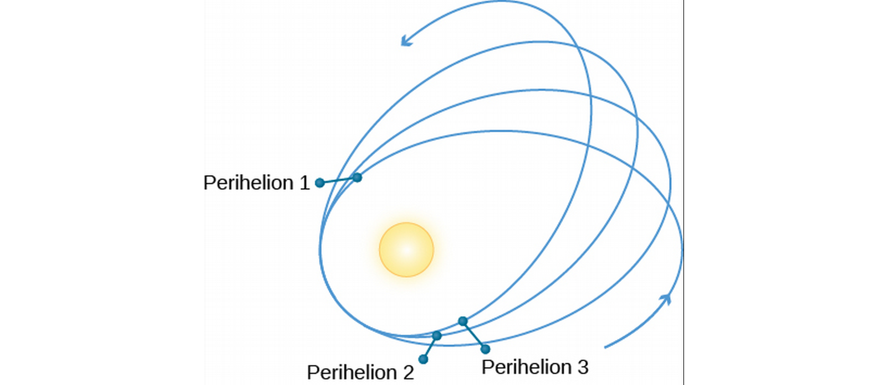
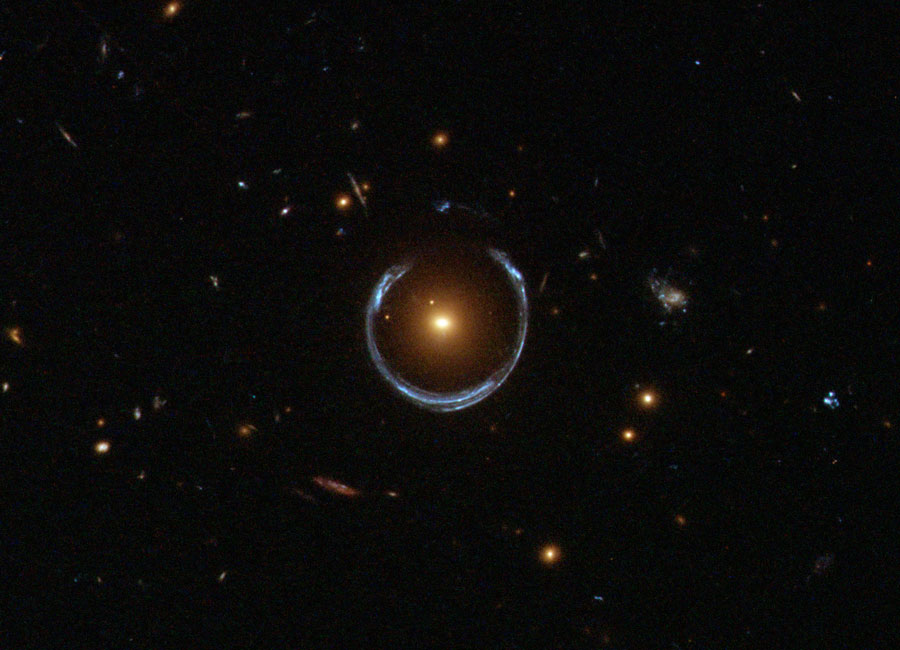
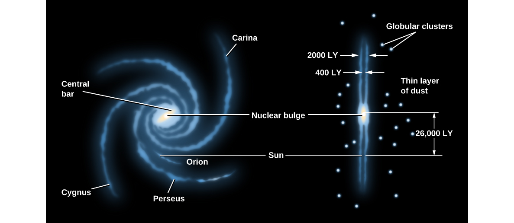
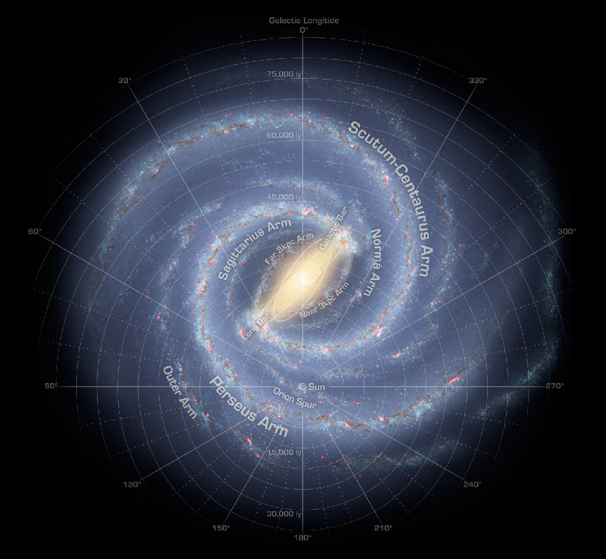
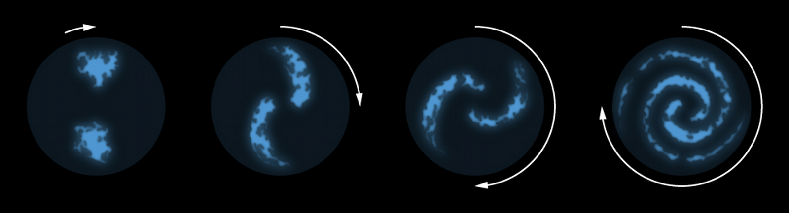
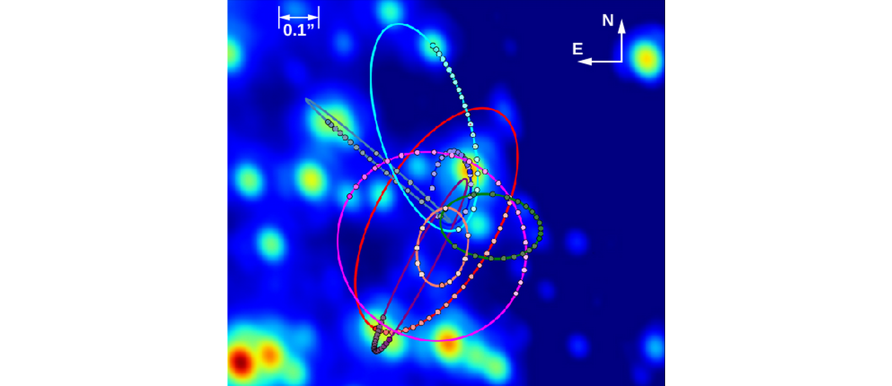
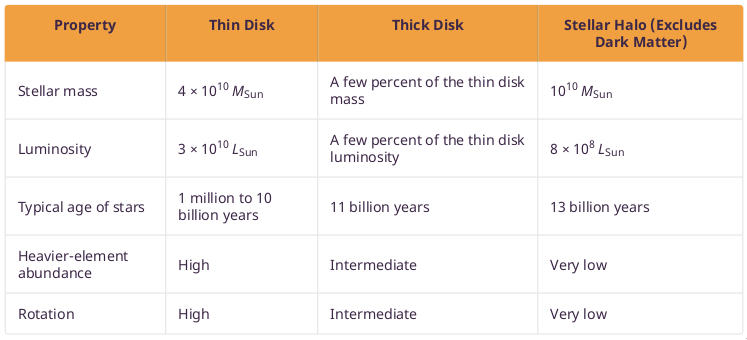
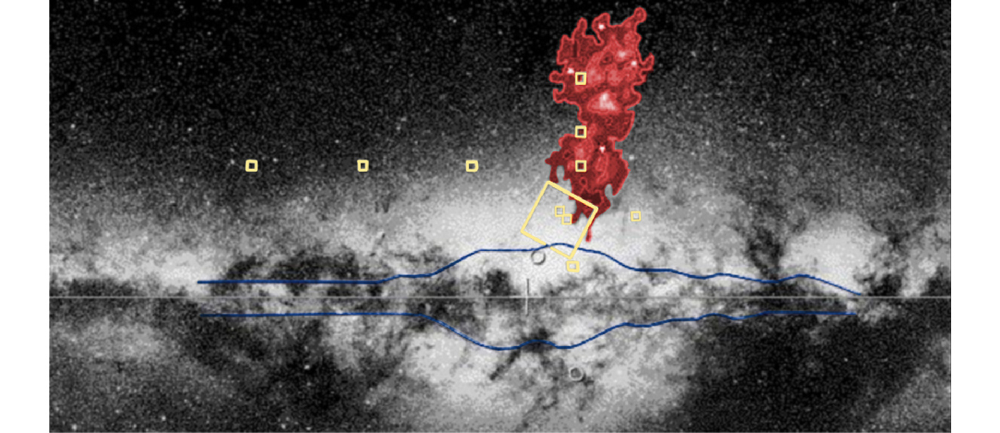

ASTR101 Ch 24-25
Ch 24 - Black Holes and Curved Spacetime
Introducing General Relativity
- Einstein's Equivalence Principle (EP) states that to an observer confined to a reference frame, gravity can't be distinguished from acceleration.

Gravity or Acceleration?
- You throw a ball to your friend horizontally, and it lands at their feet. Are you in an accelerating reference frame, or is it gravity?

The Paths of Light and Matter
- The EP posits that there is no experiment that can discern a stationary frame in gravity from an accelerating frame.
- But light goes straight across a spaceship in freefall, violating the EP!
- Light curves!

Spacetime and Gravity
Linkages: Mass, Space, and Time
- In Newtonian Physics, space and time were separated. An event can be uniquely described by its space (\(x,y,z\)) and time \(t\). That's four independent dimensions.
- Einstein combines space and time in spacetime and illustrates that they are interlinked!
- "Matter tells spacetime how to curve; spacetime tells matter how to move." -John Wheeler.
Spacetime Examples
- A biker travels eastward, his distance eastward is shown as a function of time. The speed limit is 100 km/h.

- An ant walks along a rubber sheet. Its path looks straight to us until we distort the rubber sheet with a paperweight, after which its path looks curved (the ant is going straight!).

Tests of General Relativity
The Motion of Mercury
- General relativity correctly predicts the unnaccounted for precession of Mercury's perihelion (Newtonian mechanics predicts 531 arcsec/century, we observed 574 arcsec/century).

Gravitational Lensing
- Light bends according to the curvature of spacetime, resulting in rings.

Gravity waves, LIGO
https://gizmodo.com/how-to-make-your-own-gravitational-waves-1785524107
Time in General Relativity
- The stronger the gravity, the slower the pace of time. (Time moves more slowly near massive objects).
- This results in gravitational redshift.
- Einstein's theory confirmed to within .1\% when a Viking spacecraft on Mars went behind the Sun as viewed from Earth; its signal slowed according to within .1\% Einstein's theory of general relativity.
- Practical application: GPS, which yields your location based on the time it takes for radio signals to reach your position from different satellites, are so precise that they must take relativity into account. Clocks on satellites tick more slowly than on Earth by 7 millionths of a second per day.
Black Holes
Classical Collapse
- We observed that the smaller we shrink the diameter of a star, the tighter its gravitational grip at the surface (why is this the case?).
- So, the escape velocity increases as the star shrinks. If it could shrink enough, the escape velocity would be faster than light and nothing could escape it; this is the definition of a black hole.
- Why is it called a black hole?
Collapse with Relativity
- General Relativity tells us gravity is really a curvature of spacetime. What we perceive to be higher gravity is more curvature of spacetime.
- The event horizon or Schwarzschild radius is the radius around the black hole where light (and consequently, anything else) cannot escape.
- Keep in mind, the unique effects of black holes are local. Far enough away, it's as if we had a star of that mass and a larger radius, which is not as big a deal.
- The current treatment of a star entering a black hole is that it will collapse into a singularity of zero volume, and infinite density.
Requirements for a Black Hole
- We need to use Kepler's laws to detect black holes that are very massive and give off no light.
- Black holes can "eat" stars, which results in accretion disks.

Figure 8: Artist's conception.
- As matter is sucked into a black hole's accretion disk, atoms clash violently in near-speed of light speeds as they approach the event horizon, heating the gas to 100 million K or more, resulting in X-ray emissions.
Ch 25 - The Milky Way Galaxy
The Architecture of the Galaxy
Herschel Measures the Galaxy
- In 1785, William Herschel noticed that most of the stars he observed lay along a plane.
- He hypothesized that the Sun was near the middle of a disk-shaped system of stars.
- The shape was correct, but he thought we were at the center because of interstellar dust.

- Harlow Shapley used RR Lyrae stars (using the period-luminosity relations) to map star clusters.
- He found them distributed in a spherical volume with its center far from the Sun in the direction of Sagittarius.
- Thus the Sun is not the center of our Galaxy.

Disks and Haloes
- The main issue with mapping out our Galaxy is the interstellar dust which blocks out stars.
- Astronomers use radio and IR frequency ranges, which penetrate interstellar dust better.

- Brightest part is 100,000 Ly in diameter, only 2000 Ly thick.
- Youngest stars and their dust within 100 Ly of the Galaxy.
- In the disk, stars are concentrated in a central bar composed of mostly old yellow-red stars.
- The Milky Way Galaxy and other spiral galaxies with bars are termed barred spirals.
- The sun is halfway between the galactic center and its edge, 70 Ly from the galactic plane.
- The two main arms, Scutum-Centaurus and Perseus, emerge from the bar.

Figure 12: Unbarred (M74) and strongly barred spiral galaxies (NGC1365).
- Near the center is of the Galaxy is the central bulge (or nuclear bulge).
- It's difficult to observe due to interstellar dust, so the first image was taken in infrared.
- The bulge is twice as long as it is wide, shaped like a peanut.
- At its center is a tremendous concentration of matter.

- The Galaxy consists of a thin disk, a thick disk, the nuclear bulge, and a spherical halo of very old, faint stars extending at least 150,000 from the galactic center, containing most globular clusters.

- The mass extends even farther out with dark matter, an invisible source of mass with unknown composition.
Spiral Structure
The Arms of the Milky Way


- Most stars are in the two main arms, Scutum-Centaurus and Perseus.
- The Sun is along a short arm, the Orion Spur, which is 10,000 Ly long.

Figure 17: Features near Orion Spur
Formation of Spiral Structure
- Galaxies don't rotate all together, as expected from Kepler's law, P2∝a3.
- Instead, they have differential galactic rotation, where closer objects rotate with a higher period.
- Differential rotation turns features into spirals, which explains the spiral arms of the Galaxy.

- Turns out that this differential rotation over the 13-billion-year age of the Galaxy would result in it spiralling so much, it loses its features.
- Hubble observations show galaxies of like age begin with bring, clumpy star-forming regions.
- Those that would become spiral galaxies then decreased in turbulence until rotation was the dominating motion.
- Only at 3.6 billion years old would well-defined spiral arms begin to form, and only well-defined arms would form.
- Finally, at around 8 billion years old, the galaxies could have multi-armed structures.
- Supercomputer simulations replicate spiral arms and demonstrate the importance of the gravitational influence of giant molecular clouds on the formation of spiral arms.
The Mass of the Galaxy
Kepler Helps Weigh the Galaxy
- The Sun, like the rest of the stars in the Galaxy, orbits the Galactic center.
- The speed of this orbit is 200 kps (!), so that it takes us 225 million years to circle the galactic center. This is called a galactic year, of which 20 have passed in Earth's entire lifetime.
- We can use this orbital period and Kepler's law to find the mass of the galaxy.
- We obtain the result that the mass inside the Sun's orbit (a radius of 30,000 Ly) is about a hundred billion Solar masses.
- Astronomers supposed this is a good approximation for the mass of the Galaxy, since luminous matter and bright stars drop off dramatically beyond 30,000 Ly from the galactic center.
- This seems like a reasonable conclusion, right?
A Galaxy of Mostly Invisible Matter
- Nope.
- A violation of Kepler's law consists of globular clusters and satellite galaxies outside of the luminous boundary of the Milky Way which don't rotate more slowly than the Sun.
- There are some globular clusters and RR Lyrae 30-150 kLy with orbital velocities greater than the Sun!
- Turns out most objects outside the Galaxy are moving faster than the Sun!

Figure 19: Orbital velocities CO/H gas as function of distance from Galactic Center (red), compared to orbital velocities if the matter were mostly contained within 50,000 Ly (blue).
- By comparing the period of the Sun to that of the matter outside of the Galaxy, we can find how much matter is between the Sun's orbital radius and the edge of the Galaxy.
- Remember, we can use Kepler's Law here because the orbits are stable; neither falling into the galactic center, nor flying out away from it.
- Astronomers calculate the total mass of the Galaxy to be at least 2×1012 MSun!
- This is 20 times greater than the amount of luminous matter.
- The dark matter halo which composes most of this matter extends to 200,000 Ly and is not quite spherical.
- What is dark matter (DM)?
- Can't be stars, since it's invisible.
- Can't be a gas, or we would have detected its emission and/or absorption spectra.
- Can't be interstellar dust, which would obscure galaxies noticeably.
- Can't be black holes or neutron stars, which would produce more X-rays than are observed, and would have resulted in a lot more heavy elements in younger stars than we observe today.
- Can't be brown-dwarfs or Jupiter-like planets; gravitational lensing experiments of the dark matter conclude that they can't be made up of lots of small objects one millionth to one tenth the mass of the Sun.
- Perhaps DM is made of a subatomic particle we haven't detected yet on Earth!
- DM is an active area of research.
The Center of the Galaxy
- At the center of the galaxy is a black hole with the mass equivalent of 4.6 million Suns concentrated in a sphere of diameter smaller than Mercury's orbit.
- This is an example of a supermassive black hole, Sagittarius A*, a black hole much too large to have been created by the death of a single star.
A Journey toward the Center

Figure 20: Radio image of the galactic center region by the VLA in NM.

Figure 21: Sagittarius A and some hot ionized gas, taken by VLA radio telescopes.
Finding the Heart of the Galaxy
- How can we tell that it's a black hole and not a dense cluster of stars at the center of the Galaxy?
- The event horizon of a galactic black hole of mass 4×106 MSun is only 17 times the size of the Sun (the size of a single red giant).
- We can observe the orbits around Sagittarius A* to find its mass by Kepler's law and get an upper limit of 17 Lh on its diameter.
- This upper limit is tightened through radio astronomy, in which the Very Long Baseline Array found the diameter to be no larger than .3 AU (the size of Mercury's orbit).

- If the central mass were made up of something other than a supermassive black hole, the objects are calculated to collapse and form a black hole within 100,000 years, which is very small compared to the Galaxy's 13 billion year lifespan.
Finding the Source
- Sagittarius A* may have formed from a large cloud of gas, then grown as it absorbed other objects, or it could have formed indirectly through the death of a star before growing.
- Sagittarius A* is not finished eating, and clouds are disappearing into it at a rate of 1 MSun/thousand years.
- Every 10,000 years (on average), it swallows a star that passes nearby for dessert, letting off a flare of radiation that briefly outshines all the stars in the Milky Way.
- In 2013, when the Chandra X-ray satellite detected a flare 400 times brighter than usual, but this is smaller than expected for a full star (probably a heating asteroid).
Stellar Populations in the Galaxy

Figure 23: Table 25.1
Two Kinds of Stars
- During WWII, Walter Baade of Germany discovered two types of stars using the Mt Wilson telescopes of Southern California.
- Examining Andromeda, he noticed that the reddish stars in its nuclear bulge resemble those in our globular clusters and halo, and distinguished these from the bluer stars near the spiral arms.
- He called the bright blue stars population I and the stars of the halo/globular cluster population II.
- We now know these have different chemical compositions, age, and orbital motions around the galactic center.
- Population I stars are found only in the disk and with eccentricities near zero, such as supergiants. Interstellar matter and molecular clouds are found where Population I stars are found.
- Population II stars don't care about spiral arms, but occur throughout the galaxy, with eccentric elliptical orbits that can take them through the galactic disk. These include RR Lyrae. Stars in globular clusters are also classified as Population II.
- Population I has stars as old as 10 billion years and as new as today, while Population II consist of ancient stars 11-13 billion years old.

Figure 24: Halo stars go through the galactic plane.
The Formation of the Galaxy
The Protogalactic Cloud and the Monolithic Collapse Model
- We can use stellar surveys to analyze the formation of the Galaxy.
- For example, since the oldest stars in the halo and globular clusters are spherically distributed, the protogalactic cloud that birthed the Galaxy was probably roughly spherical.
- The oldest stars are 12-13 billion years old, so our Galaxy probably shares about that age.
- Just as with star formation, the protogalactic cloud collapsed to form a thin rotating disk.
- Stars born before the collapse didn't participate in it!

Figure 25: Monolithic collapse model of Galaxy formation.
Collision Victims and the Multiple Merger Model
- 70 kLy from Earth and 50 kLy from the Galactic center is the closest known galaxy, the Sagittarius dwarf galaxy.
- It's on the other side of the galactic center, and its elongated shape indicates it's being torn by our galaxy's tides.

Figure 26: Sagittarius dwarf galaxy,
- There's evidence for more close encounters between our Galaxy and others.
- Such interactions with smaller galaxies result in the Milky Way stealing some of their stars due to its greater pull, which then orbit our Galaxy in eccentric halo orbits.
- Astronomers have identified streams originating from 12 small galaxies that came close to our galaxy, with six more streams associated with globular clusters.
- Globular cluster M54 is thought to be the nucleus of the Sagittarius dwarf which is currently merging with the Milky Way.
- There are more galactic collisions in store. Long tidal tails have been stripped from the Canis Major dwarf galaxy and wrapped themselves around the Milky Way thrice; they are expected to merge in the next billion years.
- In 3 billion years, the Milky Way itself is expected to be swallowed by the Andromeda galaxy.